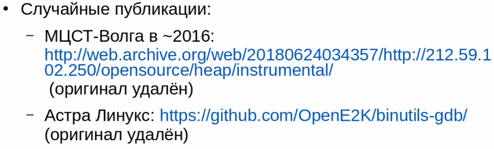

В анналах Интернета можно разыскать частичную информацию о кодах машинных инструкций процессоров Эльбрус. Ссылки пролетали в видео в одном из открытых стримов:
|
 |
Ссылки в текстовом виде:
http://web.archive.org/web/20180624034357/http://212.59.102.250/opensource/heap/instrumental
https://github.com/OpenE2K/binutils-gdb - оригинал в наличии